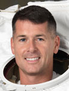

Lyndon B. Johnson Space Center
Houston, Texas 77058
|
National Aeronautics
and Space Administration Lyndon B. Johnson Space Center Houston, Texas 77058 |
 |
Biographical Data |
||
ROBERT S. KIMBROUGH (COLONEL, U.S. ARMY)
NASA Astronaut
PERSONAL DATA: Born June 4, 1967, in Killeen, Texas. Married to the former Robbie Lynn Nickels of Marietta, Georgia. They have three children. He enjoys baseball, golf, weightlifting and running. His father, Lt. Col. (ret.) Robert W. Kimbrough, resides in Hudson, Florida. His mother, DeAnn Johnson, resides in Fernandina Beach, Florida. Her parents, Robert and Carol Nickels, reside in Savannah, Georgia.
EDUCATION: Graduated from The Lovett School, Atlanta, Georgia in 1985; received a Bachelor of Science Degree in Aerospace Engineering from the United States Military Academy, West Point, New York, in 1989, and a Master of Science Degree in Operations Research from the Georgia Institute of Technology in 1998.
ORGANIZATIONS: Army Aviation Association of America; United States Military Academy Association of Graduates; Army Athletic Association; West Point Society of Greater Houston, Association of the United States Army.
SPECIAL HONORS: Distinguished Engineering Alumni Award – Georgia Institute of Technology; Captain of the West Point baseball team; First Team All-Conference Pitcher; Distinguished Graduate from U.S. Army flight school; Defense Meritorious Service Medal; two Meritorious Service Medals; NASA Space Flight Medal; Army Commendation Medal; Army Achievement Medal; National Defense Service Medal; Southwest Asia Service Medal; Kuwaiti Liberation Medal; Saudi Arabian Kuwaiti Liberation Medal; Valorous Unit Award; and Military Outstanding Volunteer Service Medal.
EXPERIENCE: Kimbrough graduated from West Point in May 1989 and was commissioned as a Second Lieutenant in the U.S. Army. He entered the U.S. Army Aviation School in 1989 and was designated an Army aviator in 1990. In late 1990, he was assigned to the 24th Infantry Division (Mechanized), Fort Stewart, Georgia, and was deployed to Southwest Asia, where he served in Operation Desert Storm. He served in the 24th Infantry Division as an attack helicopter platoon leader, aviation liaison officer, and attack helicopter battalion operations officer. In 1994, he was assigned to the 229th Aviation Regiment (Attack) (Airborne) at Fort Bragg, North Carolina, where he commanded an Apache helicopter company as well as the Regimental headquarters company. After completing a Masters of Science Degree at the Georgia Institute of Technology in 1998, he was assigned as an assistant professor in the Department of Mathematical Sciences at the United States Military Academy. Other military schools include the Army Parachutist Course, Army Jumpmaster Course, German Airborne Course, the Combined Arms Services Staff School and the Command and General Staff College. Kimbrough has logged more than 3000 hours in numerous aircraft and spacecraft.
NASA EXPERIENCE: Kimbrough joined the NASA team at the Johnson Space Center (JSC) in September 2000. He was assigned to NASA's Aircraft Operations Division at Ellington Field in Houston, where he served as a Flight Simulation Engineer (FSE) on the Shuttle Training Aircraft (STA).
Kimbrough was selected as an astronaut candidate by NASA in May 2004. In February 2006, he completed Astronaut Candidate Training that included scientific and technical briefings, intensive instruction in shuttle and International Space Station systems, physiological training, T-38 flight training and water and wilderness survival training. Completion of this initial training qualified him for various technical assignments within the Astronaut Office and future flight assignment. Kimbrough completed his first spaceflight in 2008, logging a total of 15 days, 20 hours, 29 minutes and 37 seconds in space and 12 hours and 52 minutes of Extravehicular Activity (EVA) in two spacewalks. Kimbrough currently serves as the Vehicle Integration Test Office Chief for the Flight Crew Operations Directorate.
SPACEFLIGHT EXPERIENCE: STS-126 Endeavour (November 14 to November 30, 2008) launched at night from the Kennedy Space Center, Florida, and returned to land at Edwards Air Force Base, California. It was NASA's 4th shuttle flight in 2008 and the 27th shuttle/station assembly mission. Highlights of the almost 16-day mission included expanding the living quarters of the space station to eventually house six-member crews by delivering a new bathroom, kitchenette, two bedrooms, an exercise machine and a water recycling system. During the mission, Kimbrough performed two spacewalks, logging a total of 12 hours and 52 minutes of EVA. STS-126 also delivered a new resident to the station, replacing Greg Chamitoff, Expedition 17/18 with Sandy Magnus, Expedition 18. STS-126 returned to Earth after completing 250 orbits in more than 6 million miles.
APRIL 2014